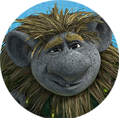

Na vila

Você continua andando, durante horas sem sucesso na sua busca por alimento o que é comum porque você não pensa muito bem. Quando menos se espera, você ouve um uivo ao longe, qual decisão será tomada agora?
1 - Seguir o som do uivo
2 - Continuar buscando por alimento.
Clique em qualquer lugar para continuar